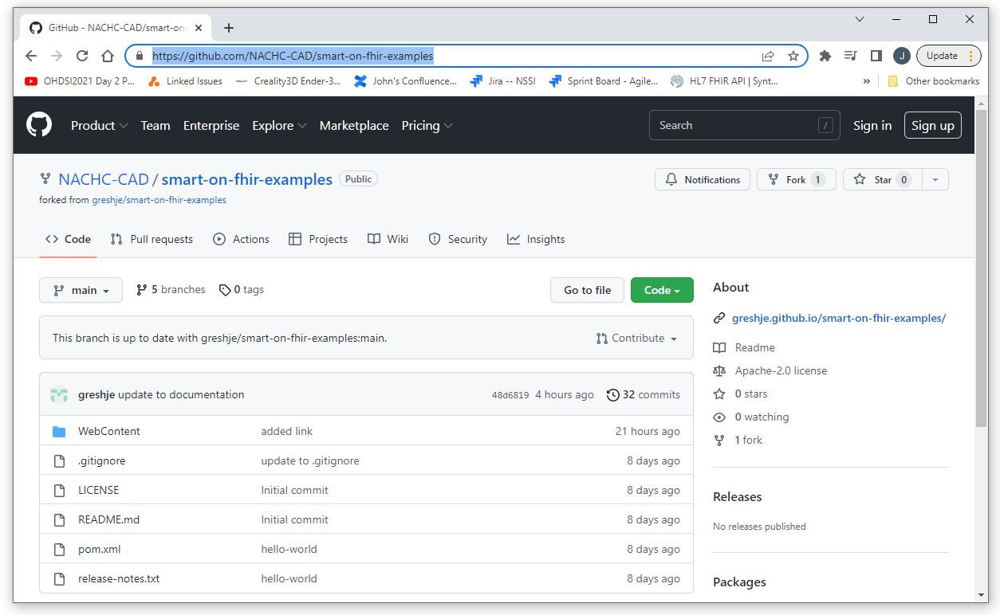

In order to develop and deploy SMART on FHIR applications we will need some basic tools. Specifically, we will need an integrated development environment (IDE), a web server, a way to manage our code base (version control), and the tools used to build our deployable SMART on FHIR application. For these examples we will be using the following:
| Java | Java is a progamming language that will be used in our development of SMART on FHIR applications. |
| Eclipse | Eclipse is a common IDE used for Java and other Software development |
| Tomcat | An open source web server maintained by Apache that can be integrated into Eclipse. |
|
|
The source code we will be using is stored in Github. We will be using a github client to download and manage our SMART on FHIR examples. |
|
|
Maven is a build tool often used for Java projects. We will be using Maven as our build tool. |
The SMART on FHIR Examples Application (smart-on-fhir-examples) can be downloaded from Github here:
https://github.com/NACHC-CAD/smart-on-fhir-examples.

To download the source code for smart-on-fhir-examples, create a folder on your local machine
and then open a cmd window and navigate to that folder.
Then execute the following command.
git clone https://github.com/NACHC-CAD/smart-on-fhir-examples